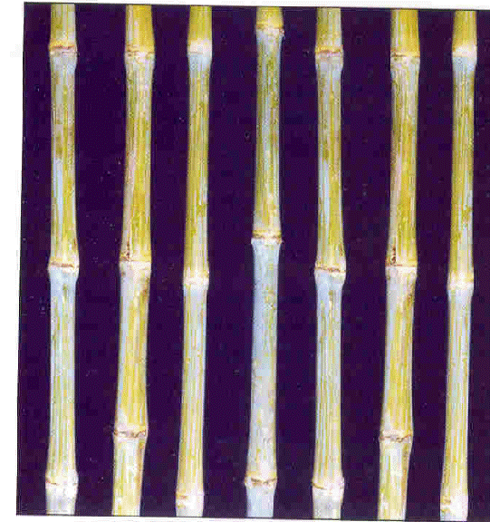

|
SWEET SORGHUM (Sorghum bicolor)
CROP IMPROVEMENT
1. Season and Varieties
| Season |
variety (irrigated) |
Districts |
| Kharif (June- July) |
SSV 84, CSV 19 SS (RSSV 9) |
All Districts except Nilgris |
| Rabi ( Sept-Oct.) |
SSV 84, RSSV 9 |
All Districts except Cuddalore, Thanjavur, Thiruvarur, Nagapattinam and Nilgris |
| Summer(Mar.- April) |
SSV 84, RSSV 9 |
All Districts except Nilgris |
Note: sowing should be avoided during July – August and November – January
2. Varietal Particulars
| Particulars |
SSV84 |
RSSV9 |
| Parentage |
Sel From IS 23568 |
RSSV X SPV 462 |
| Duration(days) |
120-125 |
115-120 |
| Area (districts) |
National level |
National level |
| Seasons (Pattam) |
Kharif |
Kharif |
| Grain yield Kg/ha |
1000- 1200 |
800-1000 |
| Green cane yield (t/ha) |
30-35 |
35-40 |
| Plant height (cm) |
190- 210 |
240- 270 |
| Juice extractability(%) |
25.4 |
26.2 |
| Brix (%) |
17-19 |
18-20 |
| Total soluble solids(%) |
11.6 |
13.6 |
| Reducing sugars(%) |
3.18 |
1.81 |
| Sucrose (%) |
9.6 |
11.4 |
| Ethanol yield (Kl/ha) |
800- 1000 |
1000 -1200 |
| CCS (q /ha) |
16.5 |
25.8 |
| Sheath color |
NT |
NT |
| Node |
9-10 |
11-14 |
| Midrib |
Green |
Dull Green |
| Earhead shape |
Oval |
Oval |
| Compactness |
Semi- compact |
Semi-compact |
| Grain colour |
White |
Creamy |
| Special features |
Turtle grain |
Round |
1. TREATMENT OF SEED
Step 1: Treat the seeds 24 hours prior to sowing with Captan or Thiram 2 gm/kg of seed or
Metalaxyl 4 gm / kg of seed to control downy mildew.
Step 2: Treat the seeds required for one hectare with 3 packets (600gm) of Azospirillum using rice gruel as binder.
Note: Dissolve 0.5 gm of gum in 20 ml of water. Add 4 ml of Chlorpyriphos 20 EC or Monocrotophos 35 WSC or Phosalone 35 EC. To this add 1.0 kg of seed, pellet and shade dry to control shootfly and stemborer.
2. FARM LAND PREPARATION
Form ridges and furrows at a spacing of 45 cm apart
3. SOWING
- Seed rate of 10 kg/ha
- Adopt a spacing of 45 x 15 cm (population 1,48,000/ha)
- Sow the seeds at a depth of 2 cm and cover with soil
Note: Use increased seed rate upto 12.5 kg per hectare and remove the shoot fly damaged seedlings at the time of thinning or raise nursery and transplant only healthy seedlings.
4. IMPORTANCE OF INM
Application of inorganic nutrients alone in the long run will lead to soil and environmental pollution. Hence integration organic and inorganic fertilizer will sustain the soil heath and improve the cane yield of the sweet sorghum crop.
5. IMPORTANCE OF BALANCED NUTRITION
Application of balanced fertilizer at recommended dose in the right stage of the crop will not only improve the productivity but also improve the soil fertility and reduce the environmental pollution.
6. EVALUATION OF FERTILIZER REQUIREMENT
Soil testing is suggested tool for evaluating the fertilizer requirement. It has to be done before the cropping season well in advance so as to ascertain the native fertility of the soil and to recommend the correct dose of fertilizer which will reduce the fertilizer cost.
7. RECOMMENDED INM
- Apply 12.5 tons of FYM/ha at last ploughing.
- Soil application of Azospirillum @ 10 packets (2.0 kg/ha) after mixing with 25 kg of FYM + 25 kg of soil may be carried out before sowing/planting.
- 12.5 kg /ha of MN mixture mixed with enough sand to make a total quantity of 50 kg and applied over the furrows and on top 1/3 of the ridges.
- Apply NPK fertilizers as per soil test recommendations. If soil test recommendation is not available adopt a blanket recommendation of 120 : 40: 40 kg of NPK/ha
8. STAGES OF APPLICATION OF FERTILIZERS
- Apply azospirillum and MN mixtures as basal
- Apply half dose of N and full dose of P 2O 5 and K 2O basally before sowing.
- Apply the balance N in two splits of 25% each on 15th and 30th day of sowing.
4. Weed Management
- Apply the pre-emergence herbicide Atrazine 50 WP – 500 gm /ha on 3 days after sowing followed by one hand weeding on 40-45 days after sowing may be given.
- If herbicides are not used, hand weed twice on 15-20 and 30-40 days after sowing.
5. Water Management
- Water requirement: 400-450 mm
| Stages |
No. of irrigation |
Days of transplanting / sowing of crop |
| Direct sown |
| Light soil |
| Irrigate for germination |
1 |
1st day |
| Establishment |
2 |
4th , 15th day |
| Vegetative phase |
1 |
28th day* |
| Flowering stage |
3 |
40th , 52nd & 64th day* |
| Maturity phase |
2 |
75th , 88th day |
| Heavy soils |
| Irrigate for germination |
1 |
1st day |
*Critical stage for water requirement
6. Post harvest Management
Harvesting
- Consider the average duration (100-110 days) of the crop and observe the crop. When the crop attains physiological maturity the hilum region of the seed will become dark in colour and indicate the ideal stage of harvest.
- Cut the earheads and sundry the panicles to remove the excess moisture.
- Cut the stem at ground level after the removal of leaves at the nodes.
- Canes are made in to bundles of 10 to 15 canes each and transported to the mills for crushing.
- The harvested cane should be covered with leaves (trashes) to avoid direct sun light.
- The canes are to be transported to the mills within 48 hours of cutting.
Storage of seeds
Dry the seeds below 10 per cent and mix 100 kg of grains with 1 kg of activated kaolin to reduce the rice weevil and rice moth incidence
Spray•malathion 50 EC 10 ml/lit @ 3 lit of spray fluid/100M2 over the bags during storage in godowns.
|